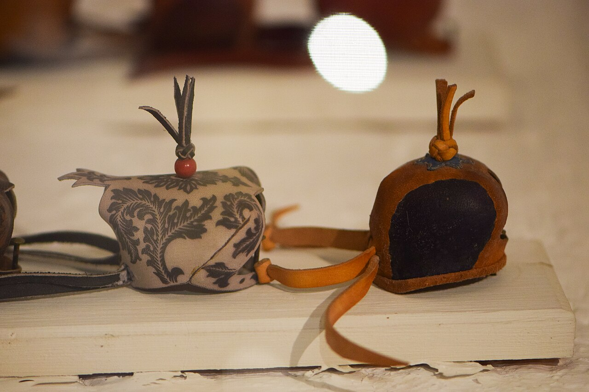

Resources → Reference
Falconry Hood Sizing Chart by Species
A properly fitted hood is one of the most important tools in a falconer’s kit. It calms the bird during transport, veterinary handling, and stressful situations. An ill-fitting hood causes distress, can damage feathers around the eyes, and may be thrown off at the worst possible moment. This guide covers how to measure for a hood, sizing by species, and tips for fitting and breaking in a new hood.
Why Hoods Matter
Raptors are highly visual animals. Blocking their sight with a well-fitted hood triggers a calming response—the bird relaxes, stops bating, and stands quietly. This is not cruelty; it is the equivalent of a blindfold on a horse. A calm bird is a safe bird, both for the raptor and the handler.
Hoods are essential for longwing falconers (those flying Peregrines, Prairie Falcons, Gyrfalcons, and Merlins). Falcons are typically hooded during transport, while waiting in the field, and immediately after a flight until the falconer is ready to unhood for the next slip. Many buteo and accipiter falconers also use hoods, especially during veterinary visits, car travel, and initial manning.
Hood Types: Dutch, Indian & Arab
Three main hood styles are used in modern falconry:
- Dutch hood: The most common style in Western falconry. Made from multiple leather panels stitched together with a raised plume block on top. Opens and closes with leather braces that the falconer pulls with one hand while the bird sits on the other fist. Dutch hoods are available in the widest range of sizes and are the standard for most North American falconers.
- Indian hood: A simpler design made from a single piece of shaped leather. Typically has no braces—it is placed on and removed by hand. Indian hoods are often used for initial training (hood-breaking) because they are lightweight and less intimidating to the bird. Less adjustable than Dutch hoods.
- Arab hood: Traditional in Middle Eastern falconry. Often elaborately decorated. Similar in function to the Dutch hood but with a different brace system and typically a wider eye opening. Less commonly used in American falconry but preferred by some Gyrfalcon and Peregrine falconers.
How to Measure for a Hood
The most accurate way to size a hood is to measure the bird’s head directly. If the bird is not yet in your possession, use the species chart below as a starting point, but be prepared to exchange the hood once you can measure the actual bird.
- Head circumference: Wrap a flexible measuring tape or a strip of paper around the widest part of the bird’s head, just above the eyes and below the ears (ear coverts). This measurement in inches or millimeters corresponds to hood size.
- Beak-to-occiput length: Measure from the tip of the upper mandible (beak) to the back of the skull (occiput). This helps determine hood depth.
- Beak clearance: The hood must provide enough room for the beak to open slightly for breathing and casting without the beak tip pressing against the inside of the hood.
Most hood makers use head circumference as the primary sizing metric. When ordering, provide the circumference measurement and the species—experienced hood makers will fine-tune the pattern accordingly.
Hood Sizing Chart by Species
The sizes below are approximate ranges. Individual birds vary, and there can be significant overlap between male and female birds of the same species. Always measure your specific bird when possible.
| Species | Sex | Head Circ. (in) | Dutch Size | Notes |
|---|---|---|---|---|
| American Kestrel | Male | 3.0–3.3 | S1–S2 | Very small head. Indian hoods often easier to fit. |
| American Kestrel | Female | 3.2–3.5 | S2–S3 | Slightly larger than males. Rarely hooded in practice. |
| Merlin | Male | 3.4–3.7 | S3–S4 | Small, round head. Needs snug fit to prevent shaking off. |
| Merlin | Female | 3.6–4.0 | S4–M1 | Noticeably larger than male Merlins. |
| Sharp-shinned Hawk | Male | 3.2–3.5 | S2–S3 | Seldom hooded. Very small head proportional to body. |
| Sharp-shinned Hawk | Female | 3.5–3.9 | S3–S4 | Larger but still small. Use lightweight hoods. |
| Cooper’s Hawk | Male | 4.0–4.4 | M1–M2 | Flat-headed profile requires shallower hood. |
| Cooper’s Hawk | Female | 4.4–4.9 | M2–M3 | Significantly larger than males. Measure carefully. |
| Prairie Falcon | Male | 4.5–5.0 | M3–L1 | Narrow, streamlined head. Dutch hoods work well. |
| Prairie Falcon | Female | 5.0–5.5 | L1–L2 | Larger head, same streamlined profile. |
| Peregrine Falcon | Male (tiercel) | 4.8–5.3 | M3–L1 | Most commonly hooded species. Wide size range between subspecies. |
| Peregrine Falcon | Female | 5.3–5.9 | L1–L3 | Anatum females are largest. Tundrius females slightly smaller. |
| Harris’s Hawk | Male | 4.8–5.2 | M3–L1 | Round head profile. Some falconers do not hood Harris’s Hawks. |
| Harris’s Hawk | Female | 5.2–5.8 | L1–L2 | Large females may need L2 or larger. |
| Red-tailed Hawk | Male | 5.2–5.7 | L1–L2 | Broad, rounded head. Many apprentices do not hood Red-tails. |
| Red-tailed Hawk | Female | 5.6–6.2 | L2–L4 | Large head. May need custom sizing for very large females. |
| Northern Goshawk | Male | 5.0–5.5 | L1–L2 | Fierce temperament makes hooding useful for handling. |
| Northern Goshawk | Female | 5.5–6.1 | L2–L3 | Large, powerful head. Needs robust hood construction. |
| Gyrfalcon | Male | 5.5–6.0 | L2–L3 | Large head. Frequently hooded for longwing falconry. |
| Gyrfalcon | Female | 6.0–6.8 | L3–XL2 | Largest commonly flown falcon. May require custom hoods. |
| Ferruginous Hawk | Male | 5.3–5.8 | L1–L2 | Wide gape requires good beak clearance. |
| Ferruginous Hawk | Female | 5.8–6.4 | L2–L4 | Very large head. Custom sizing often needed. |
Fitting & Breaking In
A new hood requires both proper fitting and a gradual introduction to the bird:
- Check the fit on a calm bird. The hood should sit comfortably without pressing on the eyes or pinching the beak. The bird should be able to open its beak slightly inside the hood. You should be able to fit a finger between the hood brace and the bird’s throat—if it is too tight, the bird cannot breathe comfortably.
- Eye clearance. When the hood is on, gently feel the area around the bird’s eyes through the leather. There should be no pressure on the eyeballs. Hoods that press on the eyes can cause corneal damage over time.
- Brace tension. Dutch hood braces should close snugly but not crush the back of the skull. Practice opening and closing the braces one-handed before putting the hood on the bird.
- Break-in period. New leather hoods are stiff. Before first use, gently flex the hood, work the braces, and soften the leather with a light application of leather conditioner (neatsfoot oil or a product recommended by the hood maker). Some falconers stuff the hood with a ball or rolled cloth and leave it overnight to pre-shape it.
- Hood training (hood-breaking). Introduce the hood gradually. Start by placing it on for a few seconds while the bird eats on the fist, then immediately remove it and reward with food. Gradually increase the duration over days until the bird accepts the hood calmly. Never force the hood on a panicking bird—this creates lasting aversion.
Hood Care & Maintenance
- Clean regularly. Wipe the inside of the hood with a damp cloth after each use. Oil from the bird’s feathers and residue from mutes can build up and cause skin irritation or infection.
- Condition the leather. Apply a thin coat of leather conditioner every few weeks to keep the leather supple. Stiff, dried-out leather is uncomfortable for the bird and harder to open and close.
- Check stitching. Inspect the seams and braces for wear. A brace that breaks during use means a lost hood—and potentially a lost bird if the hood falls off during transport.
- Store properly. Keep hoods on a hood block (a wooden form shaped like a bird’s head) to maintain their shape when not in use. Storing hoods flat or crumpled deforms the leather.
- Have a backup. Always carry a spare hood in your hawking bag. Hoods can be lost in the field, and you do not want to be caught without one.
Browse Falconry Hoods
Find Dutch, Indian, and Arab style hoods from verified hood makers in our directory.
Browse HoodsMake or Sell Hoods?
List your hood-making business and reach falconers looking for quality hoods.
Add Your Business